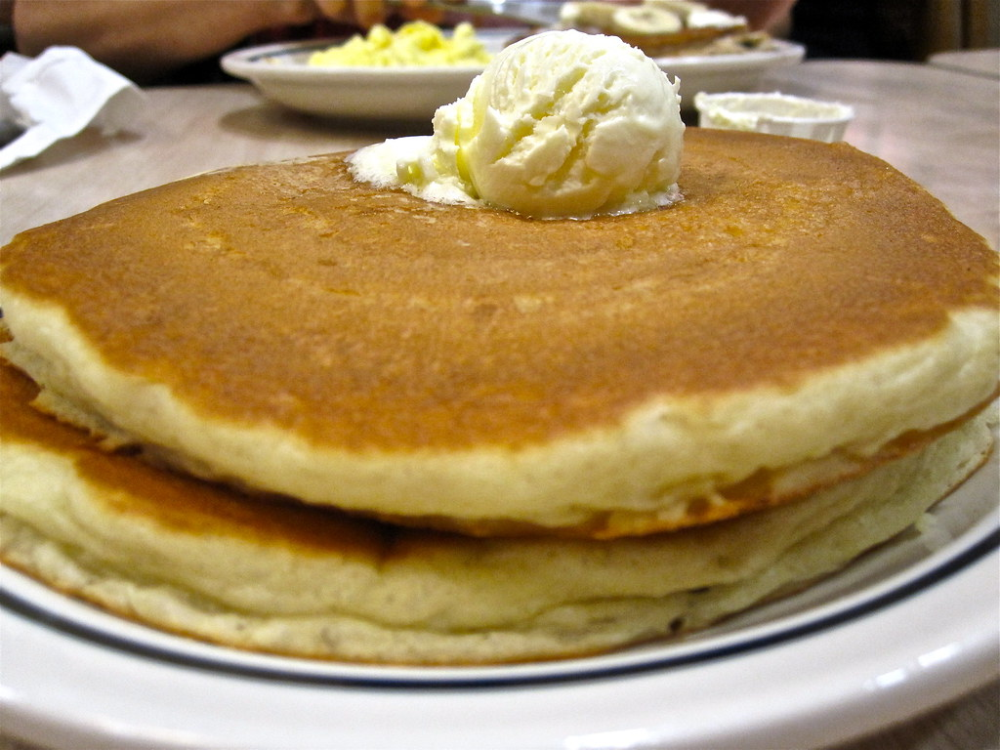

Not sure what to have for breakfast? Why not try this appetizing buttermilk pancake recipe! With just 15 minutes of prep and 10 minutes of cooking, you can have 12 (5-inch) pancakes ready to serve to both you and your family for breakfast. With simple ingredients such as buttermilk, flour, and eggs, this simple recipe will be sure to please!